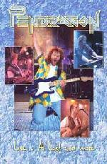

| Artist: | Pendragon |
| Title: | Live.. At Last And More |
| Label: | Metal Mind |
| Length(s): | 130 minutes |
| Year(s) of release: | 2002 |
| Month of review: | [06/2002] |
| 1) | March Of The Torreodores [intro] | (not on CD) |
| 2) | Nostradamus | (not on CD) |
| 3) | As Good As Gold | |
| 4) | Paintbox | |
| 5) | Breaking The Spell | (not on CD) |
| 6) | Guardian Of My Soul | |
| 7) | Back In The Spotlight | |
| 8) | The Last Man On Earth | (not on CD) |
| 9) | The Shadow | |
| 10) | Leviathan | |
| 11) | Masters Of Illusion | |
| 12) | The Last Waltz [Queen Of Hearts Part 2] |